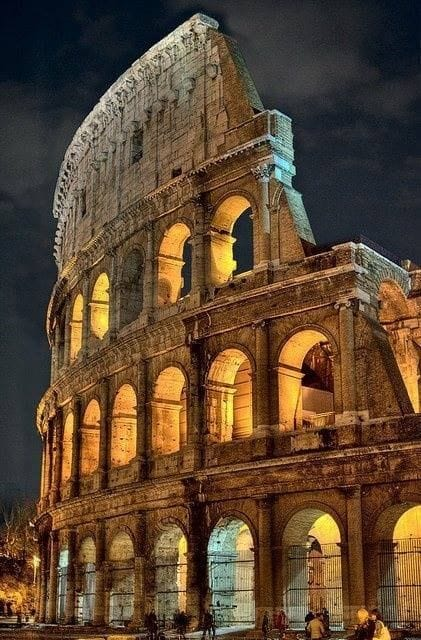
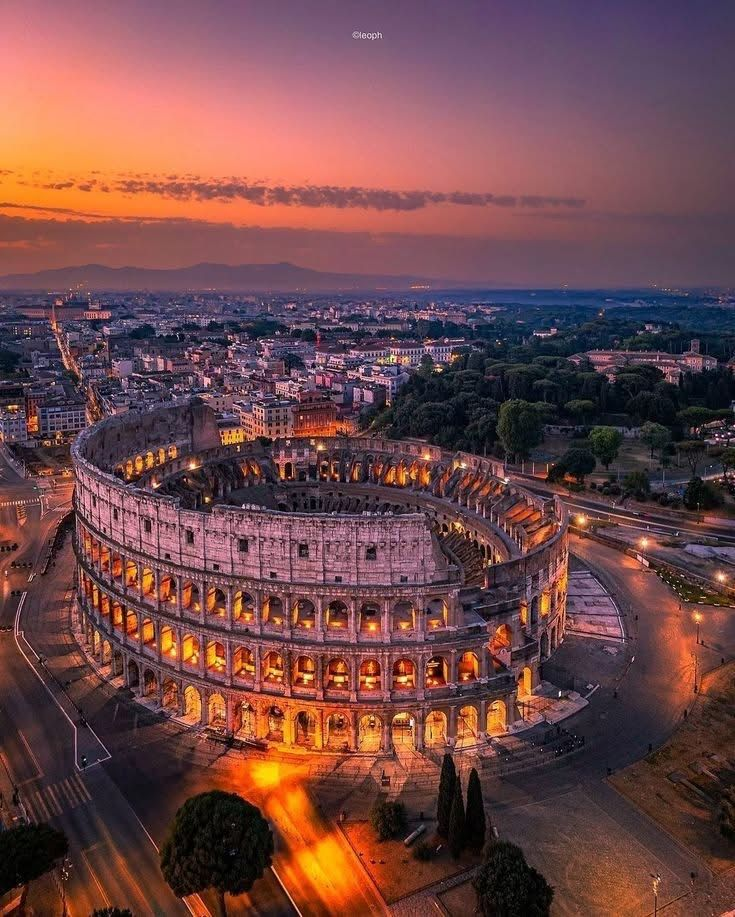
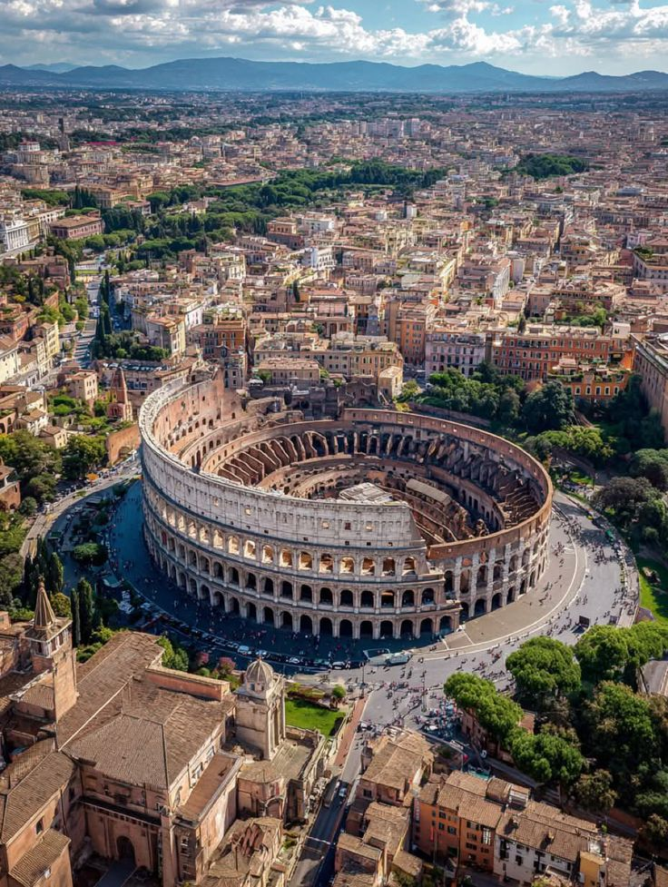

يُعتبر الكولوسيوم واحدًا من أعظم المعالم التاريخية في العالم، ويقع في قلب مدينة روما بإيطاليا. تم بناؤه في العصر الروماني القديم منذ ما يقرب من ألفي عام، وكان يُستخدم كمدرج ضخم لإقامة العروض القتالية والمنافسات الجماهيرية. اشتهر الكولوسيوم بالمصارعين الذين كانوا يتقاتلون أمام آلاف المتفرجين، كما كانت تُقام بداخله عروض مسرحية واحتفالات ضخمة تعكس قوة الإمبراطورية الرومانية. يتميز المبنى بتصميمه الهندسي المذهل، حيث يتكون من عدة طوابق وأقواس حجرية عملاقة، وكان يتسع لعشرات الآلاف من الأشخاص في وقت واحد. ورغم مرور القرون وتعرض أجزاء منه للزلازل والعوامل الطبيعية، لا يزال الكولوسيوم رمزًا للعظمة الرومانية القديمة، ويُعد من أشهر الوجهات السياحية في العالم. أُدرج الكولوسيوم ضمن عجائب الدنيا السبع الجديدة تقديرًا لقيمته التاريخية والمعمارية الفريدة، كما يمثل شاهدًا حيًا على تطور الحضارة الرومانية وتأثيرها الكبير في التاريخ الإنساني.